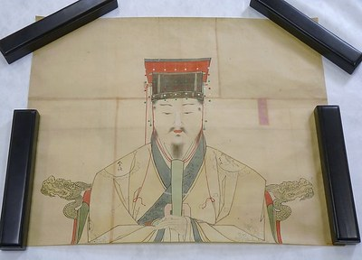
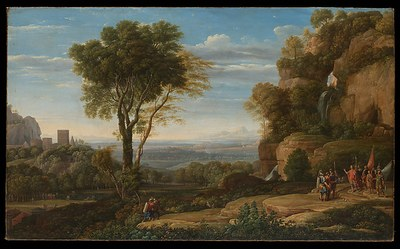

Which painting do you prefer?
Look closely. There is no right or wrong answer.
Compare 60 pairs of public-domain artworks from The Met's Open Access collection. Choose by your own preference. After each choice, see how AI judges and a feature model compare; at the end, see three agreement rates and your strongest disagreements.
How your choices are saved
The quiz sends every painting choice to a central research database. Choosing a painting sends its result with an anonymous browser ID, round ID, pair and position, A/B choice, display and choice times, elapsed time, and receipt time. Playing requires online saving; if you do not want your choices stored, please do not select a painting. Progress is also kept in this browser so you can return. We do not ask for your name, email, or precise location. The hosting provider may process network information such as your IP address in service logs.
Checking online saving...
You can continue only after each choice is confirmed saved online. If saving fails, retry the same choice. Restarting begins a new round and leaves previously received records intact.
Loading paintings...
Please wait.
Painting A

Painting B

Your choice:
AI judges:
Feature model:
Feature differences
These differences describe the images. They do not explain the model's decision. A higher value does not mean a painting is more beautiful.
Your round summary
You and AI judges:
You and feature model:
Feature model and AI judges, this set:
Full supplied dataset reference: 462/594 (77.8%) model/judges agreement. This uses a different set of pairs.
Your strongest disagreements with the AI judges
Up to three pairs, ranked by the judges' support for the option you did not choose.
Answered: 0
About this art preference quiz
Choose the artwork you prefer in each pair. After every choice, explore how the AI judges and feature model compare. At the end, review your agreement rates and strongest disagreements. How the comparison works.